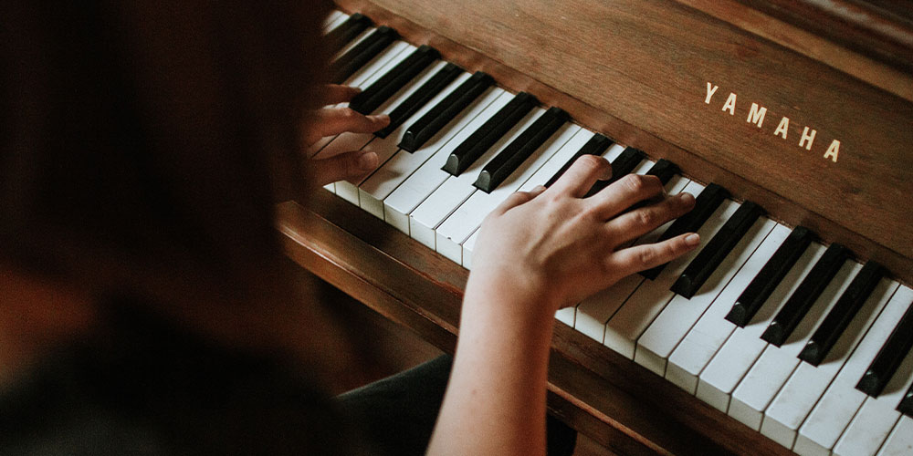

My hobbies
I have been playing piano since I was 8 years old. I started going to russian music school majoring in piano. After graduating it in 7 years, I decided to have music in my life as something that would soothe my mind and help me mentally and emotionally throghout my life

As my second hobby I chose drawing, since I've been doing this since I was a toddler and I first held pen. Since my parents are artists I had an access to a lot of different tools and books. As of now I don't practice it as something professional, as playing piano it calms me down during hard times.